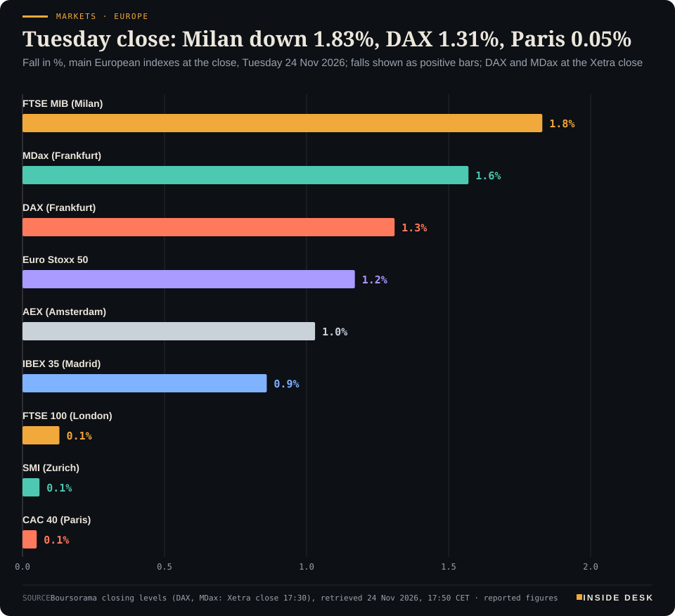
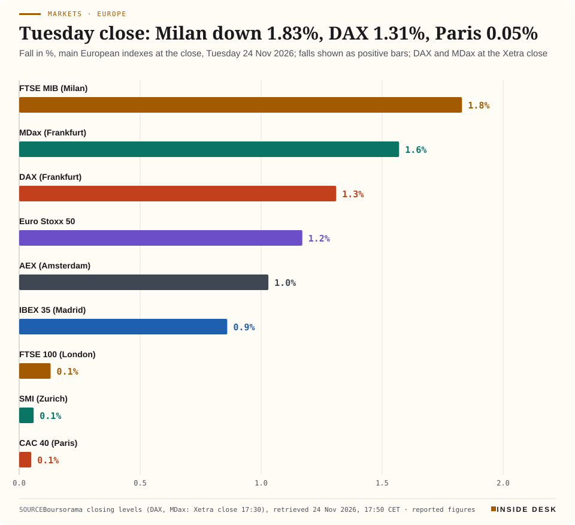
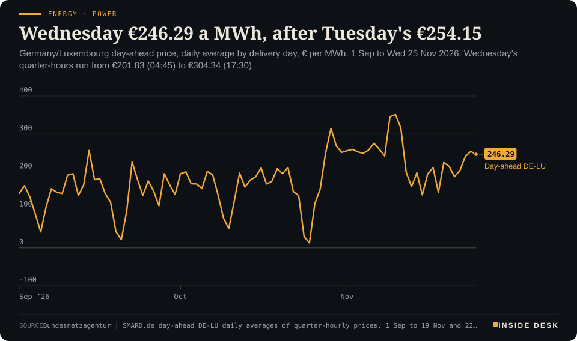
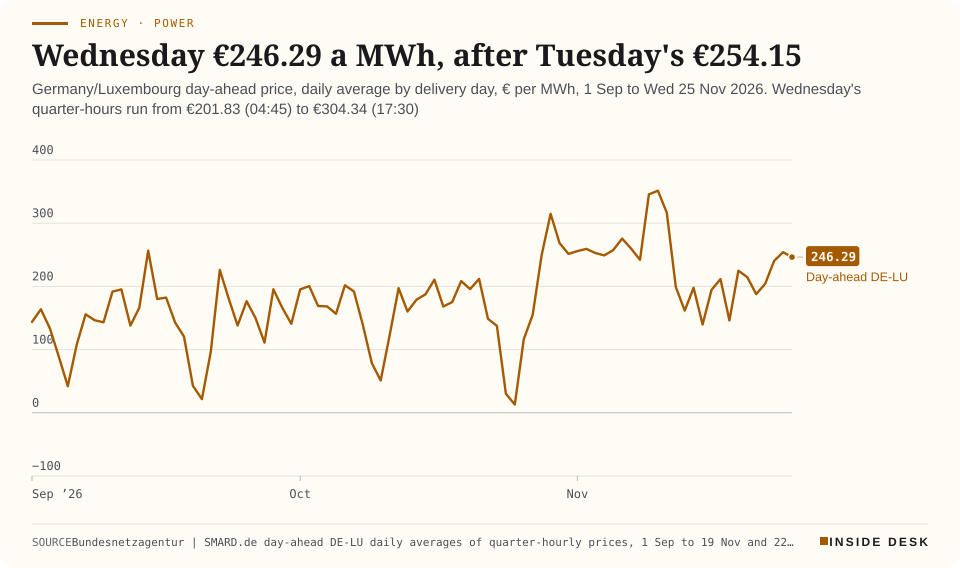
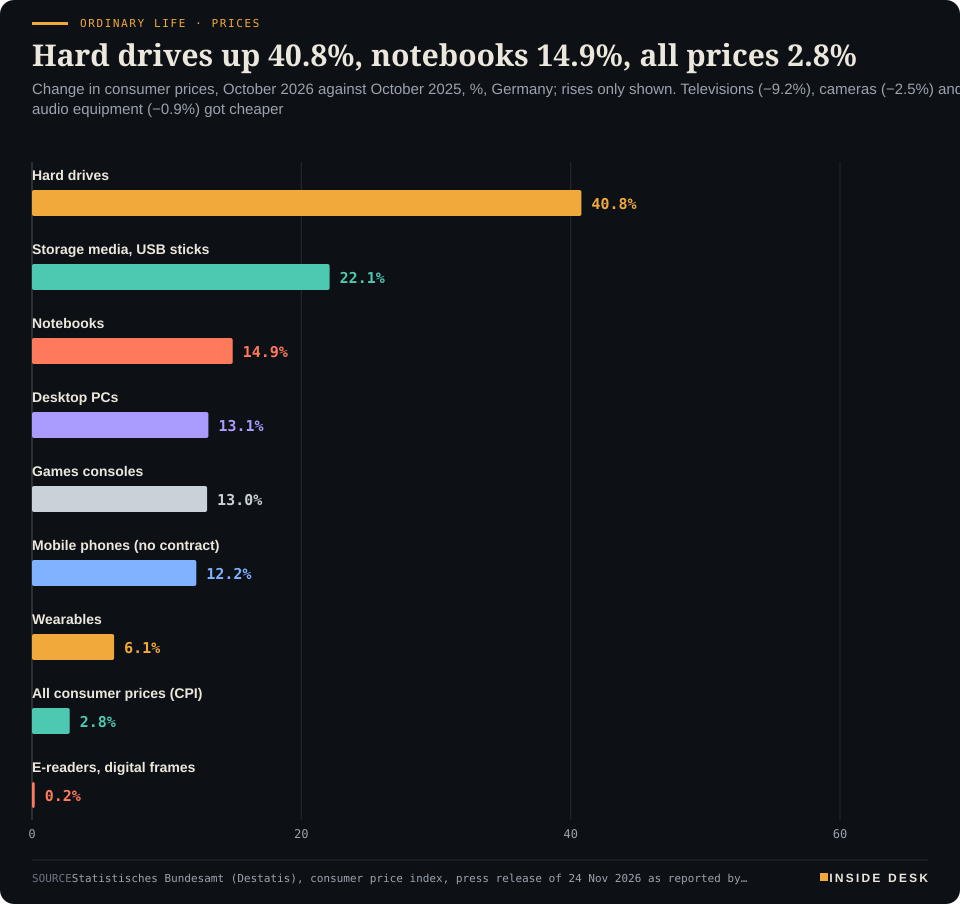
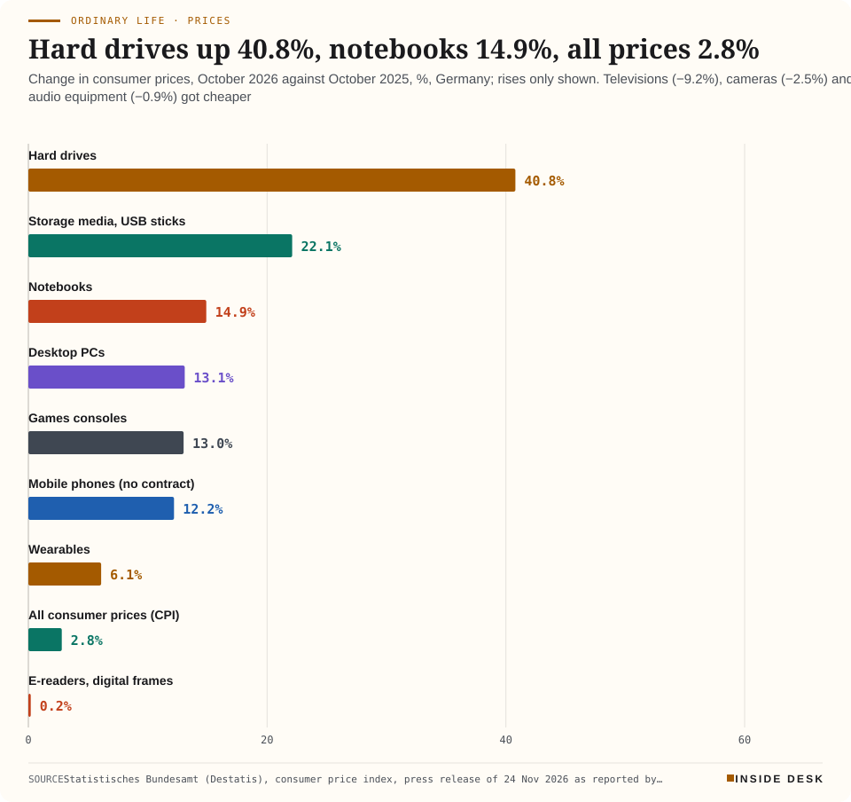

German firms felt better for the seventh month running while German shares fell: the economy and the market are different animals.
Geo-economics · p. 5
Energy & Industry · p. 9
Climate & Weather · p. 15
The day in one sentenceGerman firms felt better for the seventh month running while German shares fell: the economy and the market are different animals.
ContentsInside Desk · Evening ePaper24 November 2026
18:30 Evening ePaper, updated live until 22:30 with an “Updated” time and a Latest page
Sun 10:00 The Sunday Magazine
Berlin time. Every issue is free.
How to read it
Swipe, use the arrow keys or the page strip. Tap any headline for the reading view. Press / to search, t for contents, +/− to zoom. Download the PDF.
LatestInside Desk · Evening ePaper24 November 2026
Latest
Live: this page and the issue are updated until 22:30 Berlin time.
Markets: New York's afternoon, Nasdaq -1.45%, Dow +0.80%
LeadInside Desk · Evening ePaper24 November 2026
Markets & Macro · Lead · 3 min
Germany's business mood is the best since the spring of 2023. Frankfurt's shares fell as the AI trade unwound. Both are true.
Germany’s companies are in a better mood than at any time since the spring of 2023. The ifo business climate rose to 90.6 points in November from a revised 90.1 in October, its seventh rise in a row, tagesschau reported3,1. Firms rated their current business at 89.4, up from 88.8, and their expectations at 91.9, up from 91.5; economists polled by Dow Jones had expected the headline to reach 90.5 and expectations to slip2.
On the same day Frankfurt’s shares went the other way. The DAX closed the Xetra session at 25,005.51, down 1.31%, after Monday’s gain to 25,337.274. The MDax of mid-sized companies lost 1.57%, the Euro Stoxx 50 1.17% and Milan’s FTSE MIB 1.83%, while Paris’s CAC 40 ended 0.05% lower and London’s FTSE 100 slipped 0.13%4.
Markets · EuropeTuesday close: Milan down 1.83%, DAX 1.31%, Paris 0.05%Fall in %, main European indexes at the close, Tuesday 24 Nov 2026; falls shown as positive bars; DAX and MDax at the Xetra close


Bar chart of the size of the falls on the main European stock indexes at the close on Tuesday 24 November 2026, drawn as positive bars: FTSE MIB (Milan) down 1.83 percent to 48,126.17, MDax (Frankfurt) down 1.57 percent to 28,837.00, DAX (Frankfurt) down 1.31 percent to 25,005.51, Euro Stoxx 50 down 1.17 percent to 6,003.19, AEX (Amsterdam) down 1.03 percent to 1,077.91, IBEX 35 (Madrid) down 0.86 percent to 19,015.80, FTSE 100 (London) down 0.13 percent to 10,467.51, SMI (Zurich) down 0.06 percent to 14,727.33, CAC 40 (Paris) down 0.05 percent to 8,040.49. These are closing levels as shown by Boursorama.
Source: Boursorama closing levels (DAX, MDax: Xetra close 17:30), retrieved 24 Nov 2026, 17:50 CET · reported figures · CSV
The reasons for the fall had little to do with Germany. Jensen Huang’s return to Nvidia was a “Befreiungsschlag” for markets, wrote Andreas Lipkow of CMC Markets, but no solution to their underlying problems: inflation and rate worries had not gone away, nor had doubts about whether the vast AI investments will pay5. The ifo came in roughly as expected and gave buyers no new reason; investors favoured defensive sectors5. In New York the Nasdaq was 2.5% lower by midday, with Nvidia down more than 7% a day after its 31% jump6.
The ifo itself is more careful than its headline. “Die Erholung der deutschen Wirtschaft kommt voran, es fehlt jedoch an Breite,” said its president Clemens Fuest: the recovery is advancing but lacks breadth1. In manufacturing the index fell back after six rises in a row and expectations turned negative again, with consumer goods makers reporting a worse mood1. Services improved on both counts and the recovery in logistics continued; retail rose, wholesale fell, and construction slipped slightly1. Klaus Wohlrabe, who runs the survey, told Reuters there was “noch ein gewisser Weg zu gehen” before the upswing sustains itself3. Thomas Gitzel of VP Bank was blunter: the lament about the supposedly poor state of the German economy, he said, “geht mittlerweile an der Realität vorbei”, now misses reality3.
So which is it, a recovering economy or a falling market? Both, because they are different instruments. The ifo asks about 9,000 managers once a month about their own business: orders, staffing, the next six months2. The DAX prices forty large companies, many of them global businesses, minute by minute, in a market that on Tuesday was taking its cue from chipmakers in California. A survey of a logistics firm in Kassel and the price of risk in New York can move in opposite directions on the same morning without either being wrong.
Desk arithmetic puts the day in proportion. The DAX’s high this year was 27,001.67 and its low 21,863.81, Boursorama shows4. At 25,005.51 it stands about 7.4% below that high and about 14.4% above that low. A fall of 1.31% is noticeable; it is not a verdict on the German economy, any more than Monday’s rise was.
The contrarian point is not that markets are foolish. It is that slow, dull numbers deserve more of your attention than fast, exciting ones. Seven monthly rises in a survey of thousands of firms is a trend. A one-day swing in forty share prices is weather. If you want to know whether the country is getting back on its feet, the ifo, the order books and, in time, the tax receipts will tell you more than any closing bell. Nothing here is investment advice.
Geo-economicsInside Desk · Evening ePaper24 November 2026
Geo-economics · 2 min
After the Supreme Court struck down last year's worldwide tariffs, the trade representative has a subsidies investigation ready. The EU is on the list.
The United States is preparing higher duties on imports from China, the European Union and 14 other economies over their industrial subsidies, Quartz reported on Tuesday, citing The Wall Street Journal and Bloomberg1. Trade Representative Jamieson Greer could announce the findings of his investigation as soon as Tuesday, though the timing could change; tariff rates and an effective date are unclear1.
The legal route matters more than the headline. The investigation runs under Section 301 of the Trade Act of 1974, which lets a president act alone against unfair trade practices, and it was opened in March, after the Supreme Court invalidated the earlier worldwide tariffs in February 20261. One door was closed by a court; another, older one requires an investigation and a finding before it opens.
What is expected: duties on the bulk of goods from the targeted economies; rates close to those of 2025; 15% or lower for partners with trade agreements, including the EU, Japan and South Korea; steeper rates for China; steel, aluminium and cars left out because they already carry security-based duties1. The new duties would stack on top of July’s forced-labour tariffs of 10% to 12.5% on about 60 economies, which are being challenged at the Court of International Trade1.
Markets noticed. CNBC counted the report among the reasons for Tuesday’s downbeat mood on Wall Street2. For Europe the useful question is not whether 15% is fair but whether it is final, and what the finding says about subsidies the EU may want to defend in writing.
Geo-economics · Short item · ePaper extra, added
Temporary US sanctions waivers, meant to calm a war-shocked market, have widened the pool of tankers and sellers.
China and India are on track for record imports of Russian oil this year, plugging the supply gap left by the Iran war, according to tanker data and industry insiders cited by Reuters via CNBC1. Temporary US waivers on Russian oil sanctions, aimed at keeping markets supplied during the Middle East crisis, widened the pool of vessels and suppliers available to both buyers1.
It is the uncomfortable arithmetic of sanctions in a supply shock. A waiver that lowers prices for everyone also raises volumes for the sanctioned seller. Deutsche Bank says observed global liquids inventories rose in October, implying an oversupply of 1.7 million barrels a day1, and UBS’s Giovanni Staunovo points to strategic reserve releases keeping supply “relatively comfortable”1. When the surplus is firm, the waivers become a choice rather than a necessity. That is when they deserve a second look.
Geo-economics · Brief · ePaper extra, added
The World Food Programme’s executive director, Luke Lindberg, warned that chokepoints linked to the wars in the Middle East and Ukraine could raise the agency’s costs by $727 million by mid-2027, threatening food aid for 7.3 million more people1. He urged diplomats to get 10 million tonnes of Ukrainian and Russian grain already in silos to people who need it1. Freight is the least visible line in a food budget, and the one that moves first.
Markets & MacroInside Desk · Evening ePaper24 November 2026
Markets & Macro · Short item · ePaper extra, added
The chip trade reversed a day after its best session since April 2025. Outside AI, the Dow held level.
By 11:20 in New York (17:20 CET) the Nasdaq Composite was 2.5% lower and the S&P 500 1.2%, while the Dow traded around the flat line, helped by Amgen, Nike and Salesforce, CNBC reported1. Nvidia was down more than 7% after Monday’s 31% jump; Micron and AMD fell more than 10%, Broadcom 3% and Oracle more than 3%1. The S&P 500 was heading for its eighth loss in nine days, AP noted, even as much of the rest of Wall Street rose2.
UBS’s Mark Haefele said his team does not see the volatility as “a signal that the structural AI investment story has broken”, but expects more differentiation between established platforms with strong balance sheets and companies dependent on debt or scarce capacity1. That is a sober sentence for a jumpy week: the question is no longer whether AI matters, but who can pay for it. US markets close at 22:00 CET. Nothing here is investment advice.
Markets & Macro · Brief · ePaper extra, added
The Conference Board’s consumer confidence index rose 11.4 points to 103.3 in November, from 91.9 in October; the present-situation index rose to 132.8 and expectations to 83.61. “Potentially due to lower uncertainty following the midterm elections,” said its economist Fergus McCormick1. 30.8% of consumers called jobs “plentiful”, up from 26.2%1. Mood is not spending, but it is usually where spending starts.
Markets & Macro · Brief · ePaper extra, added
At 19:32 CET the Nasdaq Composite stood at 23,741.46, down 1.45%, after the 2.5% loss reported here at 17:20; the S&P 500 was 0.50% lower at 7,200.99 and the Dow 0.80% higher at 49,991.861,2. Nvidia was still down more than 7%, Micron more than 10%, AMD 9%; Anthropic, 7% lower, traded below its issue price2. Deutsche Bank’s Henry Allen wrote that current conditions “would be historically unusual ones for a bear market”2. A market that falls less is not a market that rises. US markets close at 22:00 CET. Nothing here is investment advice.
Politics & InstitutionsInside Desk · Evening ePaper24 November 2026
Politics & Institutions · Podium vs Print · 2 min
The finance minister opened budget week by defending record spending. The documents behind the speech show where one euro in three comes from.
Podium
“Das ist wahnsinnig herausfordernd.”
Lars Klingbeil, finance minister (SPD), Bundestag, opening of the final budget debate, Tuesday 24 November 2026
Print€210bn new debt
Unter dem Strich stehen damit neue Schulden von rund 210 Milliarden Euro.
Federal budget 2027, as summarised by ZDF and Deutschlandfunk, 24 November 2026
The podium. Lars Klingbeil opened the final budget debate by defending record spending on investment and security; a €34 billion gap had had to be closed, he said2. “Das ist wahnsinnig herausfordernd”, enormously challenging, he said, and he understood parliament’s irritation at a finished budget being reopened1.
The print. The core budget plans almost €561 billion of spending and almost €123 billion of net borrowing2. Add €57.8 billion of credit for infrastructure and €29.6 billion for the Bundeswehr from special funds and new debt comes to about €210 billion3. Desk arithmetic: that is about 32% of combined spending of roughly €648 billion, hence Lisa Paus’s “every third euro”3.
Parts of it go back to the committee on Wednesday to absorb the electricity tax cut, before Friday’s vote4. The speech says what the money is for; the print says where it comes from.
Politics & Institutions · Short item · ePaper extra, added
A threat, not yet a filing.
Co-leader Tino Chrupalla called the budget “verfassungsrechtlich angreifbar”, open to constitutional challenge, Handelsblatt reported1. If a case comes, the court will read the debt rules, which is what courts are for.
After Bavaria’s Markus Söder (CSU), Saxony’s Michael Kretschmer (CDU) also wants the federal government and the states to offset cold progression, the tax creep when a pay rise that only matches inflation lifts your tax rate1. The government points to its income tax reform, with higher child benefit and a higher basic allowance, and says the debate is closed1,2. The Länder share the income tax, so they have a stake in every bracket.
Psychology & BehaviourInside Desk · Evening ePaper24 November 2026
Psychology & Behaviour · 2 min
Germany's first representative study of workplace loneliness finds the strongest link is the most ordinary one: how often you actually work with somebody.
A new study by the Federal Institute for Occupational Safety and Health (BAuA) and the Leibniz research centre IfADo in Dortmund measured, for the first time in a representative German sample, how often people feel lonely at work1. Nearly 7,800 employees aged 25 to 65 were surveyed in 2023 and 20241,2.
The results come in three sizes. 26.3% said they felt alone at work, missing the company of colleagues, at least sometimes; around 17% felt excluded; just under 8% felt lonely1. Very few said “always”. “Quite often” was more common: 5.7% felt alone, 3.7% excluded and 1.9% lonely that often1.
The strongest link was the plainest one. People who work with others less often feel alone, excluded or lonely significantly more often1. Temporary contracts mattered too: those employees reported exclusion and loneliness more often than permanent staff, while managers felt excluded less often than people without staff responsibility1. Women reported exclusion more often; employees aged 46 to 65 reported loneliness less often than younger ones1.
The authors draw a modest conclusion: contact with colleagues “can be actively influenced”, so prevention should create enough chances for social contact during working hours, with particular attention to people on fixed-term contracts1. It is a cross-sectional study, so it shows what goes together, not what causes what2.
That modesty is the useful part. Nobody needs a wellness app to act on this. A standing meeting that is actually attended, a shared lunch, a new colleague given a real task with someone rather than alone: these are management habits, cheap and boring, and the data say they are where the effect is.
Psychology & Behaviour · Short item · ePaper extra, added
America's consumer mood rose across every age group. How much depended on income and on politics.
Every age group recorded higher confidence in November, the Conference Board said, with the biggest rise among Generation Z respondents; gains were largest among consumers with higher household incomes1. By party, confidence among Democrats and independents improved sharply, while it fell slightly among Republicans, who nonetheless remain the most confident group1.
The write-in answers were “slightly less negative” than in previous months, the board’s Fergus McCormick said; people still complained about high prices and rising costs, but some cited hope for the economy, and comments about war and conflict ticked up1. The survey ran from 1 to 17 November, just after the midterm elections1.
The psychology is old and well documented: people rate the economy partly through the lens of who governs, or who will. That does not make the mood false. It makes it a mixture of facts and feelings, and the useful habit is to look at the jobs answers, which moved most, rather than at the headline alone.
In WHO/Europe’s new health equity report, the poorest working-age men have four times the level of risk of clinical depression; more than a third of the least affluent 16- to 24-year-olds face severe housing-cost overburden, against under 1% of the most affluent1. The report lists the chance “to learn and stay connected to others” among five foundations of health1. Rent is a mental-health variable. It rarely appears in the clinic.
Energy & IndustryInside Desk · Evening ePaper24 November 2026
Energy & Industry · 2 min
Germany now sells almost as much electricity abroad as it buys. In euros the account is still lopsided, because it sells cheap hours and buys dear ones.
Wednesday’s electricity costs €246.29 a megawatt hour on average in the German-Luxembourg day-ahead auction, a little below Tuesday’s €254.151. The cheapest quarter-hour is €201.83 at 04:45, the dearest €304.34 at 17:30, when the lights go on and the wind does not always oblige1.
Energy · PowerWednesday €246.29 a MWh, after Tuesday's €254.15Germany/Luxembourg day-ahead price, daily average by delivery day, € per MWh, 1 Sep to Wed 25 Nov 2026. Wednesday's quarter-hours run from €201.83 (04:45) to €304.34 (17:30)


Line chart of the daily average German-Luxembourg day-ahead electricity price from 1 September to 25 November 2026, in euros per megawatt hour. Prices mostly ran between about €100 and €210 in September and October, climbed above €250 from late October, peaked at €351.48 on Tuesday 10 November, fell to €139.70 on Sunday 15 November, were €240.42 on Monday 23 and €254.15 on Tuesday 24 November, and stand at €246.29 for the latest delivery day, Wednesday 25 November.
Source: Bundesnetzagentur | SMARD.de day-ahead DE-LU daily averages of quarter-hourly prices, 1 Sep to 19 Nov and 22 Nov 2026 retrieved 22 Nov 2026; 20, 21 Nov retrieved 23 Nov; 23 to 25 Nov via Fraunhofer ISE Energy-Charts (data: Bundesnetzagentur | SMARD.de), retrieved 24 Nov 2026, 17:26 CET · CC BY 4.0 · CSV
Behind the daily price sits a quieter number from the statistics office. In the first nine months of 2026 Germany exported 48.8 terawatt hours of electricity worth €4.3 billion, 25.5% more by volume and 51.3% more by value than a year earlier2. Imports fell 13.3% to 49.2 terawatt hours but rose 20.4% in value to €5.7 billion2. The import surplus shrank to 0.4 terawatt hours, 97.5% less than the 17.9 terawatt hours of the same months of 2025; in euros it shrank only 24.8%, to €1.4 billion2.
The reason is in the averages. Imported power cost €116 a megawatt hour from January to September, up 38.9%; exported power fetched €87, up 20.6%2. Desk arithmetic: Germany pays about €29 more for each megawatt hour it buys than it earns for each one it sells. That is what a grid with a lot of wind and sun looks like: it has the most to sell in the hours when everyone else has plenty too.
It is neither a crisis nor a triumph. It is interconnectors doing their job: moving power to where it is short, at the price of the hour.
Energy & Industry · Short item · ePaper extra, added
Brent fell to a three-month low when Libya's biggest field flowed again, then bounced on fresh attacks in the Gulf. The banks keep talking about a surplus.
January Brent settled on Monday at $89.37 a barrel, down $3.20, and WTI at $80.17, down $3.24, after news that Libya’s Sharara pipeline had reopened1. The field produces 350,000 barrels a day, DTN notes, and Libya accounts for nearly 5% of OPEC output2. …
Energy & Industry · Brief · ePaper extra, added
Under the Commission’s proposed 22nd package, no European company could help Russia build, operate or repair its energy infrastructure, including refineries, and for the first time the ban would cover electricity services1. The clause lands as Ukrainian strikes knock out Russian refining capacity; the Novoshakhtinsk refinery in Rostov region suspended operations after a strike on 23 November1. Repairs need parts and engineers. That is where a ban bites slowly but surely.
Money, FX & CommitteesInside Desk · Evening ePaper24 November 2026
Money, FX & Committees · 2 min
The ECB is replacing its president, chief economist and markets chief in quick succession. Across the Atlantic, traders swung back to a December rate rise.
France has nominated the economist Laurence Boone to the European Central Bank’s executive board, Reuters reported via RTÉ, and she is expected to take the markets portfolio1. That puts Spain’s Pablo Hernández de Cos on track to succeed Christine Lagarde as president in February, while Germany’s Markus Brunnermeier is likely to become chief economist when Philip Lane leaves on 31 May1.
Three of the bank’s most important posts change hands within months. The report notes one awkward detail: the reshuffle leaves the 27-member Governing Council with just one woman, because all 21 national central banks are led by men, and confirmation “could still hit a snag” over it1. That is a fair argument to have in public, and it is better had before confirmation than after.
Across the Atlantic, the mood swung the other way within a day. After Monday’s rally had trimmed bets on a December rise, traders on Tuesday morning again priced a 95% probability that the Federal Reserve raises rates by a quarter point, and 5% for half a point, Yahoo Finance reported; the AI rally had stoked inflation worries2. American consumers expect prices to rise 5.7% over the next twelve months on average, down for a second month but still high, the Conference Board said3.
The contrast is instructive. Market probabilities flip in hours; central bank boards are built to change slowly, by nomination, hearing and vote. You may find the second process tedious. It is also why a new president in February will not mean a new policy in February.
Money, FX & Committees · Short item · ePaper extra, added
Monday's 19-month high for the dollar did not last a full day. The move is small; the reason is the rate bet.
The euro was quoted at $1.0968 in the late afternoon, Boursorama’s ticker showed at 17:33 CET1. Earlier in the day the US dollar index had eased by 0.486 points to 103.77 against a basket of currencies, DTN reported2.
The move is modest, and it comes on a day when traders again priced a 95% chance of a quarter-point Fed rise in December3. That combination looks odd until you remember that currencies trade on the gap between two central banks’ expectations, not on one. When a rise is already fully priced, there is little left to buy the dollar for.
For a household in the euro area the practical effect is tiny: a dollar price for a flight or a piece of software moves by fractions of a percent from one day to the next. The trend over months matters; a Tuesday does not. Nothing here is investment advice.
Money, FX & Committees · Brief · ePaper extra, added
Pablo Hernández de Cos is on track to take over from Christine Lagarde in February; Markus Brunnermeier is likely to become chief economist when Philip Lane leaves on 31 May, and Laurence Boone is expected to run market operations1. All nominations are subject to confirmation1. Monetary policy is set by a 27-member council, not by three people. The handovers are staggered, which is how continuity is built into a central bank.
Ordinary & Inherited LifeInside Desk · Evening ePaper24 November 2026
Ordinary & Inherited Life · 2 min
Ahead of the Christmas trade, the statistics office shows computer hardware rising five times as fast as prices in general. Screens are going the other way.
Notebooks cost 14.9% more in October than a year earlier and desktop PCs 13.1% more, the statistics office reported on Tuesday; hard drives rose 40.8% and storage media and USB sticks 22.1%1,2. Games consoles were up 13%, mobile phones bought without a contract 12.2% and wearables 6.1%, against overall consumer price inflation of 2.8%1.
Ordinary Life · PricesHard drives up 40.8%, notebooks 14.9%, all prices 2.8%Change in consumer prices, October 2026 against October 2025, %, Germany; rises only shown. Televisions (−9.2%), cameras (−2.5%) and audio equipment (−0.9%) got cheaper


Bar chart of the change in German consumer prices for electronic products from October 2025 to October 2026: hard drives up 40.8 percent, storage media and USB sticks up 22.1 percent, notebooks up 14.9 percent, desktop PCs up 13.1 percent, games consoles up 13.0 percent, mobile phones without contract up 12.2 percent, wearables up 6.1 percent and e-book readers and digital picture frames up 0.2 percent, against 2.8 percent for all consumer prices. Televisions fell 9.2 percent, cameras 2.5 percent and audio equipment 0.9 percent; falls are not drawn.
Source: Statistisches Bundesamt (Destatis), consumer price index, press release of 24 Nov 2026 as reported by ComputerBase, retrieved 24 Nov 2026, 17:30 CET · dl-de/by-2-0 · CSV
The cause is not mysterious. A memory shortage has taken hold of the market since 2025, ComputerBase notes1. Before that, the PC market had spent five years working off pandemic overproduction: from 2020 to 2025 desktop prices fell 16.3% and notebooks 9.3%1. Desk arithmetic: a desktop that cost €100 in 2020 cost about €83.70 in 2025 and about €94.70 now, so about two-thirds of the five-year fall has been undone in a single year.
Not everything on the list moved up. Televisions were 9.2% cheaper than a year ago, cameras 2.5% and audio equipment 0.9%; e-book readers and digital picture frames rose only 0.2%1. The index adjusts for quality, so a notebook that gains memory and price at the same time is not counted as pure inflation1.
For a household this is a timing question, not a reason for alarm. If the old laptop works, it will still work in spring. If the television is the thing you were going to replace anyway, the numbers are on your side this year. Nothing here is buying advice; it is the statistics office’s list, read slowly.
Ordinary & Inherited Life · Short item · ePaper extra, added
Imports of rockets and bangers rose slightly in 2025, and almost all of them came from one country.
Germany imported just under 51,100 tonnes of fireworks in 2025, slightly more than the 50,900 tonnes of 2024, the statistics office reported; 50,100 tonnes, or 98%, came from China1. In 2024 the share was 99%1. Over the past twenty years China has always supplied more than 90% of the imported quantity1.
Ordinary & Inherited Life · Brief · ePaper extra, added
The government had planned taxes on sugary drinks and plastic packaging; the CDU/CSU and SPD have now postponed them, ZDF reported1. Cuts to housing benefit and to the child supplement for low-income families were also averted1. Relief is to come from an income tax reform with higher child benefit and a higher basic allowance1. What a budget does not do is often the part you notice at the till.
Tech & ComputeInside Desk · Evening ePaper24 November 2026
Tech & Compute · 2 min
The largest share offering ever fell through its issue price on its fourth trading day. Three brokers started coverage with buy ratings the same morning.
Anthropic’s shares fell 12% on Tuesday and slipped below the $83 price at which the company sold them last week, CNBC reported1. The stock opened at $111.50 on the Nasdaq on Thursday after Anthropic raised $81.3 billion, the largest offering of all time, and has fallen steadily since1. Desk arithmetic: $83 is about 25.6% below that first price.
The offering was oversubscribed, and roughly half the institutional investors who placed orders got nothing, CNBC reported earlier; so far those firms “don’t appear to be racing” to buy the shares on the market1. Chipmakers and neoclouds fell with it, and Nvidia, 31% higher on Monday after Jensen Huang’s return, was down more than 7% in the morning2,1.
The same morning three brokers began coverage with positive ratings: Canaccord Genuity buy with a $135 target, Oppenheimer outperform with $150, and Wedbush, a day earlier, outperform with $1201. Canaccord’s own note is the most honest sentence of the day: “The risks are unusually large”, it wrote, particularly around infrastructure commitments and the durability of the company’s edge, before concluding that growth and valuation justified buying1.
Both things can be true. A company can be important and its shares can still have been priced on a good day. The first week of trading is a vote by people with money on that day’s mood; the annual report is the slower vote that counts. Nothing here is investment advice.
Tech & Compute · Short item · ePaper extra, added
The statistics office finds AI spreading fastest in big companies. Those that hold back mostly cite a lack of knowledge.
37% of German companies with at least ten employees use artificial intelligence in 2026, up from 26% in 2025, the statistics office reported on Tuesday1. Among large firms with 250 or more staff the share is 73%, among medium-sized ones 49% and among small ones 33%; all three groups grew, by 16, 13 and 10 percentage points1.
The most common uses are generating images, video and audio (59% of users), analysing written language (54%) and speech recognition (45%), mostly for marketing and sales, administration and accounting1. Of the firms that do not use AI, 18% have considered it; their reasons are lack of knowledge (65%), data-protection concerns (61%) and legal uncertainty (60%)1.
While Anthropic’s share price slid below its issue price in New York, this is the other half of the AI story: slow adoption by ordinary firms, constrained by training and lawyers rather than by enthusiasm. Share prices measure expectations. Surveys like this one measure use, and use is what eventually pays for the expectations.
Tech & Compute · Brief · ePaper extra, added
The iShares Semiconductor ETF is still more than 42% below its June highs, Wolfe Research noted; its chief strategist Chris Senyek called Monday’s move “the start of a semi bear market rally” and said Wolfe still believes chips peaked in June1. He prefers the hyperscalers to the chipmakers1. One note is not a forecast you should act on. It is a useful reminder that a 31% day can sit inside a long fall.
Health & CareInside Desk · Evening ePaper24 November 2026
Health & Care · 2 min
WHO/Europe's second health equity report finds lives getting longer and healthier across the region, but not for everyone at the same speed.
People across WHO’s European region are living longer and healthier lives than earlier generations, the organisation’s second Health Equity Status Report says, but an estimated 187 million, one in five, are being held back by insecure work, poor access to care and unaffordable housing1. They include 35 million children and adolescents, 19 million young people, 99 million working-age adults and 34 million older people1.
For some the gap is widening. Since 2010 the share of low-income working-age women reporting poor or fair health has risen from 36% to 43%, and among men from 32% to 42%, while rates among the most affluent stayed broadly stable1. Among working-age adults in the least affluent group, 34% of women and 33% of men live with a long-term illness that limits daily life, against 15% and 12% of the most affluent1. Children in the poorest households are twice as likely to die before the age of five1.
The report’s most useful pages are about what already works. Without pensions and social transfers, 86% of older women and 83% of older men in the region would live in poverty; pensions alone cut that to 23% and 19%1. Poland’s Family 800+ benefit is linked to a fall of almost ten percentage points in child poverty and social exclusion between 2015 and 2023; England’s Frome Model, which links GP surgeries with community support, was associated with a 30% drop in emergency admissions among people with three or more long-term conditions1.
“Money is just part of the story”, said Christine Brown, who heads WHO’s Venice office for investment for health1. The rest of the story is unglamorous: pension systems, benefit offices and community nurses, the machinery that turns a statistic into a longer life.
Health & Care · Short item · ePaper extra, added
A first global atlas, based on 161 countries' own reports, finds the commitments far ahead of the data.
WHO’s new Health inequality monitoring atlas, drawing on self-reported data from 161 member states, is the first global picture of how countries track health inequalities1. 89% of participating countries have commitments on health inequality in their national health plans, but only 65% have a health-ministry unit mandated to use inequality data, and just one in five published a dedicated national report in the previous decade1.
Most countries break their health data down by age, sex and place; far fewer by income, education, ethnicity, disability or migration status1. High-income countries generally have better systems, but WHO says every country has room for improvement1. “Health inequality monitoring is an essential function,” said Ahmad Reza Hosseinpoor, who leads WHO’s team on the subject1.
This is the least exciting kind of health news and among the most important. You cannot close a gap you do not measure, and measurement is an institution: a unit, a mandate, a published report every few years. The atlas is a baseline. The next edition will show who built the machinery.
Health & Care · Brief · ePaper extra, added
The Robert Koch Institute’s cancer registry centre and the German cancer registries association have launched an online report with data up to 2024, updated every year, comparing incidence and mortality between the Länder on maps and over time1. It covers new cases, deaths, survival, tumour stages and histology, and all indicators can be downloaded1. The next full “Krebs in Deutschland” report follows at the end of 20271. Open data is a public good that needs no press conference.
Security & OrderInside Desk · Evening ePaper24 November 2026
Security & Order · 2 min
Ukraine has struck Russian ships in a Libyan port. Libya's recognised government objects, and the night over Ukraine was as deadly as usual.
Ukraine’s security service says it launched seven domestically made naval drones from a mothership to strike two Russian vessels near the eastern Libyan city of Benghazi; the corvette Merkury exploded and sank in port and a dry cargo ship that Kyiv says carried weapons was hit1. President Volodymyr Zelenskyy called the operation “exemplary” and released drone footage of the strike1.
Libya’s UN-recognised government in Tripoli condemned the “conduct of any foreign military operations within Libyan territory or territorial waters” and demanded an explanation from Kyiv1. That is a reminder that a successful strike also creates a diplomatic file, and that Ukraine needs friends in the Mediterranean as much as it needs range.
The war at home did not pause. Russian attacks killed nine people and injured 81 across Ukraine over the past day, local authorities reported; in Zaporizhzhia a five-storey residential building was partly destroyed, with two dead and 48 injured, among them an infant2. Russia launched 96 drones overnight, 73 of which were downed or suppressed, the air force said2. A Russian drone briefly violated Polish airspace during a night attack on western Ukraine; the Polish military authorised a shoot-down but held fire when it turned east, citing the risk to civilians1.
Two readings are tempting and both are wrong. Benghazi does not mean the war is turning, and the Zaporizhzhia figures do not mean nothing changes. What changed is geography: Russia’s logistics to Africa now have to be defended at sea, far from home, and that costs ships, escorts and money.
Security & Order · Short item · ePaper extra, added
The Commission's new Russia sanctions reach from payment networks to football pitches. They need all 27 governments.
The European Commission’s proposed 22nd sanctions package would extend the transaction ban to about 60 Russian banks and remove them all from SWIFT, target crypto and payment networks that help Russia evade sanctions, list more than 70 further shadow-fleet ships and ban every tanker insured in Russia1. Russian ex-combatants would be barred from entering the EU; “They cannot be allowed to wander freely across our countries,” Ursula von der Leyen said1.
The package also reaches into sport and culture: Russian teams could not compete under the Russian flag at events in the EU, and money from Russian sponsors to European bodies would be restricted1. Russia’s nuclear sector, which Kyiv wanted included, is not covered1.
It needs unanimous backing. EU ambassadors hold a first discussion on 25 November, and the leaders’ summit on 26–27 November is expected to focus on a new €45 billion loan for Ukraine1. Twenty-two packages in, the method is clear: incremental, legal, slow. That is what makes them hard to undo.
Security & Order · Brief · ePaper extra, added
NATO is moving an AWACS surveillance aircraft to Poland after three Russian cruise missiles crashed on Polish territory, according to Polish prosecutors, Poland’s deputy defence minister Zalewski announced after a NATO meeting in Brussels1. The aircraft are based in Geilenkirchen in North Rhine-Westphalia1. An answer that watches before it shoots is an answer that keeps control of the escalation.
Climate & WeatherInside Desk · Evening ePaper24 November 2026
Climate & Weather · 2 min
A coastal storm will crawl up the US East Coast from Wednesday to Friday, just as millions travel. The forecast is unusually clear, which is the good news.
A coastal storm will bring strong winds, coastal flooding and soaking rain to the eastern United States over Thanksgiving, The Weather Company forecasts1. It ramps up in the Southeast on Wednesday, a busy travel day, reaches the mid-Atlantic, the Ohio Valley and New England on Thursday, the day of peak impact in much of the Northeast, and lingers into Friday1.
Gusts over 50 mph are possible along the coast from the Virginia Tidewater to New England and in parts of the interior, enough for power cuts and fallen trees1. Desk arithmetic: 50 mph is about 80 km/h. Onshore winds coincide with this week’s full-moon king tides, so moderate to major coastal flooding is possible from Georgia and the Carolinas to Long Island; in coastal Delaware and Ocean City, Maryland, water levels on Thanksgiving morning could approach those of the late-September nor’easter1.
One line in the forecast deserves more attention than the maps. The storm “will move in and move out rather quickly, instead of stalling out”1. Speed matters more than strength for flooding: a fast storm brings one or two bad high tides, a stalled one brings five.
There is a European lesson in the American timetable too. The worst outcomes of a well-forecast storm are usually logistical: a car parked in the wrong street at high tide, a flight not rebooked, a generator without fuel. The forecast has done its part three days early. The rest is the dull work of reading it.
Climate & Weather · Short item · ePaper extra, added
While ski resorts wait in vain, a thin strip of snow fell near Frankfurt's Höchst industrial park overnight.
A high-pressure system is drawing cold polar air from the north-east over Germany, with widespread hard frost at night, the Deutscher Wetterdienst wrote on Tuesday1. Many low-mountain ski areas are still waiting for snow, but overnight in the Rhine-Main area it snowed in a narrow strip near industrial plants: so-called industrial snow, visible on the satellite image as a band from the Höchst industrial park south-west of Frankfurt1.
The recipe is precise. A cold, stable high with an inversion, cold air near the ground under warmer air, traps moisture and particles low down. Cooling towers and large heating plants add warm, wet air; it cools, condenses on aerosol particles, freezes and falls as snow, usually over a zone a few hundred metres to a few kilometres long, stretched along the wind1.
The amounts are small, but the DWD warns that a thin cover can make roads, pavements and bridges slippery when temperatures are well below zero1. It is a lovely piece of physics. It is also a reminder that a city’s weather is partly made by the city, and that the road gritting schedule should know where the chimneys are.
Climate & Weather · Brief · ePaper extra, added
The weekly relative Niño3.4 index was +2.67°C for the week ending 22 November, down from the event’s peak so far of +2.88°C, Australia’s Bureau of Meteorology says; the event is tracking as one of the strongest on record1. Most models see the peak in December or January, with El Niño conditions into the southern autumn of 20271. October was the warmest October on record for global sea surface temperatures1. A forecast this far ahead is a planning tool for farmers and insurers, if they use it.
Charts and dataInside Desk · Evening ePaper24 November 2026
Charts and data
Energy · PowerWednesday €246.29 a MWh, after Tuesday's €254.15Germany/Luxembourg day-ahead price, daily average by delivery day, € per MWh, 1 Sep to Wed 25 Nov 2026. Wednesday's quarter-hours run from €201.83 (04:45) to €304.34 (17:30)
Line chart of the daily average German-Luxembourg day-ahead electricity price from 1 September to 25 November 2026, in euros per megawatt hour. Prices mostly ran between about €100 and €210 in September and October, climbed above €250 from late October, peaked at €351.48 on Tuesday 10 November, fell to €139.70 on Sunday 15 November, were €240.42 on Monday 23 and €254.15 on Tuesday 24 November, and stand at €246.29 for the latest delivery day, Wednesday 25 November.
Source: Bundesnetzagentur | SMARD.de day-ahead DE-LU daily averages of quarter-hourly prices, 1 Sep to 19 Nov and 22 Nov 2026 retrieved 22 Nov 2026; 20, 21 Nov retrieved 23 Nov; 23 to 25 Nov via Fraunhofer ISE Energy-Charts (data: Bundesnetzagentur | SMARD.de), retrieved 24 Nov 2026, 17:26 CET · CC BY 4.0 · CSV
Latest values
Series
Value
Date
Chart
Day-ahead DE-LU
246.29
25 Nov 2026
Wednesday €246.29 a MWh, after Tuesday's €254.15
Last data point of each series in the charts above, from the Inside Desk data archive. Sources under each chart.
Back pageInside Desk · Evening ePaper24 November 2026
Before you close the tab
The day in one sentence
German firms felt better for the seventh month running while German shares fell: the economy and the market are different animals.
One thing you can do this week
This week, have lunch or a coffee with one colleague you usually only email or message, and talk about the work, not the weather. Germany's new workplace study finds the strongest link with loneliness at work is simply how often people actually work with someone. It costs half an hour and nobody needs to call it a wellbeing measure.
A habit, not advice.
What went right
German business has now felt better for seven months in a row. The ifo business climate rose to 90.6 points in November from 90.1, its highest since the spring of 2023, as services firms rated both their current business and their prospects more highly 12. The institute says the recovery still lacks breadth, because manufacturing slipped 2. Seven small steps in the same direction are worth more than one big jump.
In euros at home
Notebooks cost 14.9% more than a year ago, desktop PCs 13.1% and games consoles 13%, while televisions are 9.2% cheaper 3. Desk arithmetic: a notebook that cost €700 in October 2025 would cost about €804 now, a €450 console about €509, and a €600 television about €545. On the power bill, Wednesday's wholesale electricity averages €246.29 a megawatt hour, about 24.6 cents a kilowatt hour before grid fees, taxes and margins 4.
Desk arithmetic on the cited figures.
Small words
Inversion
A layer of warmer air sitting on top of colder air near the ground, the reverse of the usual order. It acts like a lid: moisture, smoke and particles cannot rise and mix away. On Tuesday the weather service explained that such a lid, plus warm moist air from cooling towers, produced a strip of industrial snow near Frankfurt 5.
Commentary for information only. Not investment, legal, tax, medical or political advice. Inside Desk is free and reader-supported. Every number is sourced in the piece it appears in.
This issue has been updated.
All articles in this edition
Markets & Macro · 3 min read
Seven rises for the ifo, minus 1.31% for the DAX: two kinds of number
Germany's business mood is the best since the spring of 2023. Frankfurt's shares fell as the AI trade unwound. Both are true.
Germany’s companies are in a better mood than at any time since the spring of 2023. The ifo business climate rose to 90.6 points in November from a revised 90.1 in October, its seventh rise in a row, tagesschau reported3,1. Firms rated their current business at 89.4, up from 88.8, and their expectations at 91.9, up from 91.5; economists polled by Dow Jones had expected the headline to reach 90.5 and expectations to slip2.
On the same day Frankfurt’s shares went the other way. The DAX closed the Xetra session at 25,005.51, down 1.31%, after Monday’s gain to 25,337.274. The MDax of mid-sized companies lost 1.57%, the Euro Stoxx 50 1.17% and Milan’s FTSE MIB 1.83%, while Paris’s CAC 40 ended 0.05% lower and London’s FTSE 100 slipped 0.13%4.
Markets · EuropeTuesday close: Milan down 1.83%, DAX 1.31%, Paris 0.05%Fall in %, main European indexes at the close, Tuesday 24 Nov 2026; falls shown as positive bars; DAX and MDax at the Xetra close
Bar chart of the size of the falls on the main European stock indexes at the close on Tuesday 24 November 2026, drawn as positive bars: FTSE MIB (Milan) down 1.83 percent to 48,126.17, MDax (Frankfurt) down 1.57 percent to 28,837.00, DAX (Frankfurt) down 1.31 percent to 25,005.51, Euro Stoxx 50 down 1.17 percent to 6,003.19, AEX (Amsterdam) down 1.03 percent to 1,077.91, IBEX 35 (Madrid) down 0.86 percent to 19,015.80, FTSE 100 (London) down 0.13 percent to 10,467.51, SMI (Zurich) down 0.06 percent to 14,727.33, CAC 40 (Paris) down 0.05 percent to 8,040.49. These are closing levels as shown by Boursorama.
Source: Boursorama closing levels (DAX, MDax: Xetra close 17:30), retrieved 24 Nov 2026, 17:50 CET · reported figures · CSV
The reasons for the fall had little to do with Germany. Jensen Huang’s return to Nvidia was a “Befreiungsschlag” for markets, wrote Andreas Lipkow of CMC Markets, but no solution to their underlying problems: inflation and rate worries had not gone away, nor had doubts about whether the vast AI investments will pay5. The ifo came in roughly as expected and gave buyers no new reason; investors favoured defensive sectors5. In New York the Nasdaq was 2.5% lower by midday, with Nvidia down more than 7% a day after its 31% jump6.
The ifo itself is more careful than its headline. “Die Erholung der deutschen Wirtschaft kommt voran, es fehlt jedoch an Breite,” said its president Clemens Fuest: the recovery is advancing but lacks breadth1. In manufacturing the index fell back after six rises in a row and expectations turned negative again, with consumer goods makers reporting a worse mood1. Services improved on both counts and the recovery in logistics continued; retail rose, wholesale fell, and construction slipped slightly1. Klaus Wohlrabe, who runs the survey, told Reuters there was “noch ein gewisser Weg zu gehen” before the upswing sustains itself3. Thomas Gitzel of VP Bank was blunter: the lament about the supposedly poor state of the German economy, he said, “geht mittlerweile an der Realität vorbei”, now misses reality3.
So which is it, a recovering economy or a falling market? Both, because they are different instruments. The ifo asks about 9,000 managers once a month about their own business: orders, staffing, the next six months2. The DAX prices forty large companies, many of them global businesses, minute by minute, in a market that on Tuesday was taking its cue from chipmakers in California. A survey of a logistics firm in Kassel and the price of risk in New York can move in opposite directions on the same morning without either being wrong.
Desk arithmetic puts the day in proportion. The DAX’s high this year was 27,001.67 and its low 21,863.81, Boursorama shows4. At 25,005.51 it stands about 7.4% below that high and about 14.4% above that low. A fall of 1.31% is noticeable; it is not a verdict on the German economy, any more than Monday’s rise was.
The contrarian point is not that markets are foolish. It is that slow, dull numbers deserve more of your attention than fast, exciting ones. Seven monthly rises in a survey of thousands of firms is a trend. A one-day swing in forty share prices is weather. If you want to know whether the country is getting back on its feet, the ifo, the order books and, in time, the tax receipts will tell you more than any closing bell. Nothing here is investment advice.
Desk comment A survey is a slow vote by the people who run things. A price is a fast vote by the people who trade them.
Sixteen economies, one 1974 statute: Washington's tariffs come back by another door
After the Supreme Court struck down last year's worldwide tariffs, the trade representative has a subsidies investigation ready. The EU is on the list.
The United States is preparing higher duties on imports from China, the European Union and 14 other economies over their industrial subsidies, Quartz reported on Tuesday, citing The Wall Street Journal and Bloomberg1. Trade Representative Jamieson Greer could announce the findings of his investigation as soon as Tuesday, though the timing could change; tariff rates and an effective date are unclear1.
The legal route matters more than the headline. The investigation runs under Section 301 of the Trade Act of 1974, which lets a president act alone against unfair trade practices, and it was opened in March, after the Supreme Court invalidated the earlier worldwide tariffs in February 20261. One door was closed by a court; another, older one requires an investigation and a finding before it opens.
What is expected: duties on the bulk of goods from the targeted economies; rates close to those of 2025; 15% or lower for partners with trade agreements, including the EU, Japan and South Korea; steeper rates for China; steel, aluminium and cars left out because they already carry security-based duties1. The new duties would stack on top of July’s forced-labour tariffs of 10% to 12.5% on about 60 economies, which are being challenged at the Court of International Trade1.
Markets noticed. CNBC counted the report among the reasons for Tuesday’s downbeat mood on Wall Street2. For Europe the useful question is not whether 15% is fair but whether it is final, and what the finding says about subsidies the EU may want to defend in writing.
Desk comment A tariff that needs a finding is still a tariff. But it needs a finding, and findings can be read.
Record Russian barrels for China and India: the waiver that keeps the market supplied
Temporary US sanctions waivers, meant to calm a war-shocked market, have widened the pool of tankers and sellers.
China and India are on track for record imports of Russian oil this year, plugging the supply gap left by the Iran war, according to tanker data and industry insiders cited by Reuters via CNBC1. Temporary US waivers on Russian oil sanctions, aimed at keeping markets supplied during the Middle East crisis, widened the pool of vessels and suppliers available to both buyers1.
It is the uncomfortable arithmetic of sanctions in a supply shock. A waiver that lowers prices for everyone also raises volumes for the sanctioned seller. Deutsche Bank says observed global liquids inventories rose in October, implying an oversupply of 1.7 million barrels a day1, and UBS’s Giovanni Staunovo points to strategic reserve releases keeping supply “relatively comfortable”1. When the surplus is firm, the waivers become a choice rather than a necessity. That is when they deserve a second look.
Appears only in the ePaper · Commentary for information only. Not advice.
Geo-economics · Brief · ePaper extra, added
$727 million more by mid-2027: the food agency's bill for two wars' chokepoints
The World Food Programme warns that shipping bottlenecks could cost it aid for 7.3 million more people.
The World Food Programme’s executive director, Luke Lindberg, warned that chokepoints linked to the wars in the Middle East and Ukraine could raise the agency’s costs by $727 million by mid-2027, threatening food aid for 7.3 million more people1. He urged diplomats to get 10 million tonnes of Ukrainian and Russian grain already in silos to people who need it1. Freight is the least visible line in a food budget, and the one that moves first.
Appears only in the ePaper · Commentary for information only. Not advice.
Markets & Macro · Short item · ePaper extra, added
Minus 2.5% by midday in New York: the Nasdaq hands back part of Monday
The chip trade reversed a day after its best session since April 2025. Outside AI, the Dow held level.
By 11:20 in New York (17:20 CET) the Nasdaq Composite was 2.5% lower and the S&P 500 1.2%, while the Dow traded around the flat line, helped by Amgen, Nike and Salesforce, CNBC reported1. Nvidia was down more than 7% after Monday’s 31% jump; Micron and AMD fell more than 10%, Broadcom 3% and Oracle more than 3%1. The S&P 500 was heading for its eighth loss in nine days, AP noted, even as much of the rest of Wall Street rose2.
UBS’s Mark Haefele said his team does not see the volatility as “a signal that the structural AI investment story has broken”, but expects more differentiation between established platforms with strong balance sheets and companies dependent on debt or scarce capacity1. That is a sober sentence for a jumpy week: the question is no longer whether AI matters, but who can pay for it. US markets close at 22:00 CET. Nothing here is investment advice.
Appears only in the ePaper · Commentary for information only. Not advice.
Markets & Macro · Brief · ePaper extra, added
103.3, up 11.4 points: American consumers feel better after the midterms
The Conference Board's index is back where it was in January 2025, led by views of the jobs market.
The Conference Board’s consumer confidence index rose 11.4 points to 103.3 in November, from 91.9 in October; the present-situation index rose to 132.8 and expectations to 83.61. “Potentially due to lower uncertainty following the midterm elections,” said its economist Fergus McCormick1. 30.8% of consumers called jobs “plentiful”, up from 26.2%1. Mood is not spending, but it is usually where spending starts.
Appears only in the ePaper · Commentary for information only. Not advice.
Markets & Macro · Brief · ePaper extra, added
Minus 1.45%, from minus 2.5%: New York's afternoon
The Nasdaq has won back part of the morning's loss. The Dow stands eight points short of 50,000.
At 19:32 CET the Nasdaq Composite stood at 23,741.46, down 1.45%, after the 2.5% loss reported here at 17:20; the S&P 500 was 0.50% lower at 7,200.99 and the Dow 0.80% higher at 49,991.861,2. Nvidia was still down more than 7%, Micron more than 10%, AMD 9%; Anthropic, 7% lower, traded below its issue price2. Deutsche Bank’s Henry Allen wrote that current conditions “would be historically unusual ones for a bear market”2. A market that falls less is not a market that rises. US markets close at 22:00 CET. Nothing here is investment advice.
Appears only in the ePaper · Commentary for information only. Not advice.
Politics & Institutions · 2 min read
Podium vs Print: "wahnsinnig herausfordernd", and €210 billion of new debt
The finance minister opened budget week by defending record spending. The documents behind the speech show where one euro in three comes from.
Podium
“Das ist wahnsinnig herausfordernd.”
Lars Klingbeil, finance minister (SPD), Bundestag, opening of the final budget debate, Tuesday 24 November 2026
Print€210bn new debt
Unter dem Strich stehen damit neue Schulden von rund 210 Milliarden Euro.
Federal budget 2027, as summarised by ZDF and Deutschlandfunk, 24 November 2026
The podium. Lars Klingbeil opened the final budget debate by defending record spending on investment and security; a €34 billion gap had had to be closed, he said2. “Das ist wahnsinnig herausfordernd”, enormously challenging, he said, and he understood parliament’s irritation at a finished budget being reopened1.
The print. The core budget plans almost €561 billion of spending and almost €123 billion of net borrowing2. Add €57.8 billion of credit for infrastructure and €29.6 billion for the Bundeswehr from special funds and new debt comes to about €210 billion3. Desk arithmetic: that is about 32% of combined spending of roughly €648 billion, hence Lisa Paus’s “every third euro”3.
Parts of it go back to the committee on Wednesday to absorb the electricity tax cut, before Friday’s vote4. The speech says what the money is for; the print says where it comes from.
Desk comment A speech is judged on the day. A budget is judged in the year after.
Politics & Institutions · Short item · ePaper extra, added
The AfD threatens Karlsruhe over the budget
A threat, not yet a filing.
Co-leader Tino Chrupalla called the budget “verfassungsrechtlich angreifbar”, open to constitutional challenge, Handelsblatt reported1. If a case comes, the court will read the debt rules, which is what courts are for.
Söder, then Kretschmer: two premiers want bracket-creep relief
Berlin says its income tax reform already does the job.
After Bavaria’s Markus Söder (CSU), Saxony’s Michael Kretschmer (CDU) also wants the federal government and the states to offset cold progression, the tax creep when a pay rise that only matches inflation lifts your tax rate1. The government points to its income tax reform, with higher child benefit and a higher basic allowance, and says the debate is closed1,2. The Länder share the income tax, so they have a stake in every bracket.
Appears only in the ePaper · Commentary for information only. Not advice.
Psychology & Behaviour · 2 min read
26.3% alone at work at least sometimes, 1.9% lonely quite often: the quietest number in the office
Germany's first representative study of workplace loneliness finds the strongest link is the most ordinary one: how often you actually work with somebody.
A new study by the Federal Institute for Occupational Safety and Health (BAuA) and the Leibniz research centre IfADo in Dortmund measured, for the first time in a representative German sample, how often people feel lonely at work1. Nearly 7,800 employees aged 25 to 65 were surveyed in 2023 and 20241,2.
The results come in three sizes. 26.3% said they felt alone at work, missing the company of colleagues, at least sometimes; around 17% felt excluded; just under 8% felt lonely1. Very few said “always”. “Quite often” was more common: 5.7% felt alone, 3.7% excluded and 1.9% lonely that often1.
The strongest link was the plainest one. People who work with others less often feel alone, excluded or lonely significantly more often1. Temporary contracts mattered too: those employees reported exclusion and loneliness more often than permanent staff, while managers felt excluded less often than people without staff responsibility1. Women reported exclusion more often; employees aged 46 to 65 reported loneliness less often than younger ones1.
The authors draw a modest conclusion: contact with colleagues “can be actively influenced”, so prevention should create enough chances for social contact during working hours, with particular attention to people on fixed-term contracts1. It is a cross-sectional study, so it shows what goes together, not what causes what2.
That modesty is the useful part. Nobody needs a wellness app to act on this. A standing meeting that is actually attended, a shared lunch, a new colleague given a real task with someone rather than alone: these are management habits, cheap and boring, and the data say they are where the effect is.
Desk comment Loneliness at work is mostly a scheduling problem that gets mistaken for a personality one.
Psychology & Behaviour · Short item · ePaper extra, added
Democrats up sharply, Republicans slightly down, Gen Z most of all: who felt better in November
America's consumer mood rose across every age group. How much depended on income and on politics.
Every age group recorded higher confidence in November, the Conference Board said, with the biggest rise among Generation Z respondents; gains were largest among consumers with higher household incomes1. By party, confidence among Democrats and independents improved sharply, while it fell slightly among Republicans, who nonetheless remain the most confident group1.
The write-in answers were “slightly less negative” than in previous months, the board’s Fergus McCormick said; people still complained about high prices and rising costs, but some cited hope for the economy, and comments about war and conflict ticked up1. The survey ran from 1 to 17 November, just after the midterm elections1.
The psychology is old and well documented: people rate the economy partly through the lens of who governs, or who will. That does not make the mood false. It makes it a mixture of facts and feelings, and the useful habit is to look at the jobs answers, which moved most, rather than at the headline alone.
Four times the risk: depression and money in WHO's European report
The poorest working-age men carry four times the level of risk of clinical depression, WHO/Europe finds.
In WHO/Europe’s new health equity report, the poorest working-age men have four times the level of risk of clinical depression; more than a third of the least affluent 16- to 24-year-olds face severe housing-cost overburden, against under 1% of the most affluent1. The report lists the chance “to learn and stay connected to others” among five foundations of health1. Rent is a mental-health variable. It rarely appears in the clinic.
Appears only in the ePaper · Commentary for information only. Not advice.
Energy & Industry · 2 min read
€246.29 for Wednesday, 0.4 TWh short: Germany's power account nearly balances
Germany now sells almost as much electricity abroad as it buys. In euros the account is still lopsided, because it sells cheap hours and buys dear ones.
Wednesday’s electricity costs €246.29 a megawatt hour on average in the German-Luxembourg day-ahead auction, a little below Tuesday’s €254.151. The cheapest quarter-hour is €201.83 at 04:45, the dearest €304.34 at 17:30, when the lights go on and the wind does not always oblige1.
Energy · PowerWednesday €246.29 a MWh, after Tuesday's €254.15Germany/Luxembourg day-ahead price, daily average by delivery day, € per MWh, 1 Sep to Wed 25 Nov 2026. Wednesday's quarter-hours run from €201.83 (04:45) to €304.34 (17:30)
Line chart of the daily average German-Luxembourg day-ahead electricity price from 1 September to 25 November 2026, in euros per megawatt hour. Prices mostly ran between about €100 and €210 in September and October, climbed above €250 from late October, peaked at €351.48 on Tuesday 10 November, fell to €139.70 on Sunday 15 November, were €240.42 on Monday 23 and €254.15 on Tuesday 24 November, and stand at €246.29 for the latest delivery day, Wednesday 25 November.
Source: Bundesnetzagentur | SMARD.de day-ahead DE-LU daily averages of quarter-hourly prices, 1 Sep to 19 Nov and 22 Nov 2026 retrieved 22 Nov 2026; 20, 21 Nov retrieved 23 Nov; 23 to 25 Nov via Fraunhofer ISE Energy-Charts (data: Bundesnetzagentur | SMARD.de), retrieved 24 Nov 2026, 17:26 CET · CC BY 4.0 · CSV
Behind the daily price sits a quieter number from the statistics office. In the first nine months of 2026 Germany exported 48.8 terawatt hours of electricity worth €4.3 billion, 25.5% more by volume and 51.3% more by value than a year earlier2. Imports fell 13.3% to 49.2 terawatt hours but rose 20.4% in value to €5.7 billion2. The import surplus shrank to 0.4 terawatt hours, 97.5% less than the 17.9 terawatt hours of the same months of 2025; in euros it shrank only 24.8%, to €1.4 billion2.
The reason is in the averages. Imported power cost €116 a megawatt hour from January to September, up 38.9%; exported power fetched €87, up 20.6%2. Desk arithmetic: Germany pays about €29 more for each megawatt hour it buys than it earns for each one it sells. That is what a grid with a lot of wind and sun looks like: it has the most to sell in the hours when everyone else has plenty too.
It is neither a crisis nor a triumph. It is interconnectors doing their job: moving power to where it is short, at the price of the hour.
Desk comment A balanced account in hours is not a balanced account in euros.
Energy & Industry · Short item · ePaper extra, added
$89.37 on Monday, $90.54 on Tuesday morning: oil weighs six tankers against one Libyan valve
Brent fell to a three-month low when Libya's biggest field flowed again, then bounced on fresh attacks in the Gulf. The banks keep talking about a surplus.
January Brent settled on Monday at $89.37 a barrel, down $3.20, and WTI at $80.17, down $3.24, after news that Libya’s Sharara pipeline had reopened1. The field produces 350,000 barrels a day, DTN notes, and Libya accounts for nearly 5% of OPEC output2. On Tuesday morning Brent was back at $90.54, as six tankers had been targeted near the Strait of Hormuz in 24 hours2.
The bigger picture is quieter than the headlines. Brent has fallen by more than a fifth this month, Bloomberg reported, and Persian Gulf crude exports are back at 74% of pre-war levels according to the International Energy Agency, which expects a surplus this quarter3. Onshore stocks are still at a ten-year low, so a surplus at sea is not yet a cushion on land3. Nothing here is investment advice.
Appears only in the ePaper · Commentary for information only. Not advice.
Energy & Industry · Brief · ePaper extra, added
Refineries, and for the first time electricity: Brussels widens its energy-services ban
The 22nd sanctions package would stop European firms helping Russia build, run or repair its energy system.
Under the Commission’s proposed 22nd package, no European company could help Russia build, operate or repair its energy infrastructure, including refineries, and for the first time the ban would cover electricity services1. The clause lands as Ukrainian strikes knock out Russian refining capacity; the Novoshakhtinsk refinery in Rostov region suspended operations after a strike on 23 November1. Repairs need parts and engineers. That is where a ban bites slowly but surely.
Appears only in the ePaper · Commentary for information only. Not advice.
Money, FX & Committees · 2 min read
Three seats, one woman, a 95% bet: committees change faces, markets change minds
The ECB is replacing its president, chief economist and markets chief in quick succession. Across the Atlantic, traders swung back to a December rate rise.
France has nominated the economist Laurence Boone to the European Central Bank’s executive board, Reuters reported via RTÉ, and she is expected to take the markets portfolio1. That puts Spain’s Pablo Hernández de Cos on track to succeed Christine Lagarde as president in February, while Germany’s Markus Brunnermeier is likely to become chief economist when Philip Lane leaves on 31 May1.
Three of the bank’s most important posts change hands within months. The report notes one awkward detail: the reshuffle leaves the 27-member Governing Council with just one woman, because all 21 national central banks are led by men, and confirmation “could still hit a snag” over it1. That is a fair argument to have in public, and it is better had before confirmation than after.
Across the Atlantic, the mood swung the other way within a day. After Monday’s rally had trimmed bets on a December rise, traders on Tuesday morning again priced a 95% probability that the Federal Reserve raises rates by a quarter point, and 5% for half a point, Yahoo Finance reported; the AI rally had stoked inflation worries2. American consumers expect prices to rise 5.7% over the next twelve months on average, down for a second month but still high, the Conference Board said3.
The contrast is instructive. Market probabilities flip in hours; central bank boards are built to change slowly, by nomination, hearing and vote. You may find the second process tedious. It is also why a new president in February will not mean a new policy in February.
Desk comment Committees outlast their members. That is the whole point of them.
Money, FX & Committees · Short item · ePaper extra, added
$1.0968 for the euro, 103.77 for the dollar index: the dollar gives a little back
Monday's 19-month high for the dollar did not last a full day. The move is small; the reason is the rate bet.
The euro was quoted at $1.0968 in the late afternoon, Boursorama’s ticker showed at 17:33 CET1. Earlier in the day the US dollar index had eased by 0.486 points to 103.77 against a basket of currencies, DTN reported2.
The move is modest, and it comes on a day when traders again priced a 95% chance of a quarter-point Fed rise in December3. That combination looks odd until you remember that currencies trade on the gap between two central banks’ expectations, not on one. When a rise is already fully priced, there is little left to buy the dollar for.
For a household in the euro area the practical effect is tiny: a dollar price for a flight or a piece of software moves by fractions of a percent from one day to the next. The trend over months matters; a Tuesday does not. Nothing here is investment advice.
Appears only in the ePaper · Commentary for information only. Not advice.
Money, FX & Committees · Brief · ePaper extra, added
Brunnermeier in May, Hernández de Cos in February: the ECB's timetable, not its policy, changes first
All three nominations are still subject to confirmation, and the handovers are spread over four months.
Pablo Hernández de Cos is on track to take over from Christine Lagarde in February; Markus Brunnermeier is likely to become chief economist when Philip Lane leaves on 31 May, and Laurence Boone is expected to run market operations1. All nominations are subject to confirmation1. Monetary policy is set by a 27-member council, not by three people. The handovers are staggered, which is how continuity is built into a central bank.
Appears only in the ePaper · Commentary for information only. Not advice.
Ordinary & Inherited Life · 2 min read
Notebooks up 14.9%, televisions down 9.2%: the Christmas list is priced by the memory chip
Ahead of the Christmas trade, the statistics office shows computer hardware rising five times as fast as prices in general. Screens are going the other way.
Notebooks cost 14.9% more in October than a year earlier and desktop PCs 13.1% more, the statistics office reported on Tuesday; hard drives rose 40.8% and storage media and USB sticks 22.1%1,2. Games consoles were up 13%, mobile phones bought without a contract 12.2% and wearables 6.1%, against overall consumer price inflation of 2.8%1.
Ordinary Life · PricesHard drives up 40.8%, notebooks 14.9%, all prices 2.8%Change in consumer prices, October 2026 against October 2025, %, Germany; rises only shown. Televisions (−9.2%), cameras (−2.5%) and audio equipment (−0.9%) got cheaper
Bar chart of the change in German consumer prices for electronic products from October 2025 to October 2026: hard drives up 40.8 percent, storage media and USB sticks up 22.1 percent, notebooks up 14.9 percent, desktop PCs up 13.1 percent, games consoles up 13.0 percent, mobile phones without contract up 12.2 percent, wearables up 6.1 percent and e-book readers and digital picture frames up 0.2 percent, against 2.8 percent for all consumer prices. Televisions fell 9.2 percent, cameras 2.5 percent and audio equipment 0.9 percent; falls are not drawn.
Source: Statistisches Bundesamt (Destatis), consumer price index, press release of 24 Nov 2026 as reported by ComputerBase, retrieved 24 Nov 2026, 17:30 CET · dl-de/by-2-0 · CSV
The cause is not mysterious. A memory shortage has taken hold of the market since 2025, ComputerBase notes1. Before that, the PC market had spent five years working off pandemic overproduction: from 2020 to 2025 desktop prices fell 16.3% and notebooks 9.3%1. Desk arithmetic: a desktop that cost €100 in 2020 cost about €83.70 in 2025 and about €94.70 now, so about two-thirds of the five-year fall has been undone in a single year.
Not everything on the list moved up. Televisions were 9.2% cheaper than a year ago, cameras 2.5% and audio equipment 0.9%; e-book readers and digital picture frames rose only 0.2%1. The index adjusts for quality, so a notebook that gains memory and price at the same time is not counted as pure inflation1.
For a household this is a timing question, not a reason for alarm. If the old laptop works, it will still work in spring. If the television is the thing you were going to replace anyway, the numbers are on your side this year. Nothing here is buying advice; it is the statistics office’s list, read slowly.
Desk comment Inflation is an average. Your shopping list is not.
Ordinary & Inherited Life · Short item · ePaper extra, added
50,100 of 51,100 tonnes: where Germany's New Year fireworks come from
Imports of rockets and bangers rose slightly in 2025, and almost all of them came from one country.
Germany imported just under 51,100 tonnes of fireworks in 2025, slightly more than the 50,900 tonnes of 2024, the statistics office reported; 50,100 tonnes, or 98%, came from China1. In 2024 the share was 99%1. Over the past twenty years China has always supplied more than 90% of the imported quantity1.
Desk arithmetic: 51,100 tonnes is about 610 grams for each of Germany’s roughly 84 million residents, though of course most people buy none and a few buy a great deal. The office notes that sales were banned during the pandemic years and that wider restrictions on private fireworks keep being debated on safety and environmental grounds1.
You need not take a side in that debate to notice the supply chain. A New Year’s custom that feels local depends, almost entirely, on one shipping route and one exporting country. That is not a reason for alarm, but it is the kind of dependency that is easier to see on a dull Tuesday in November than on 31 December.
Appears only in the ePaper · Commentary for information only. Not advice.
Ordinary & Inherited Life · Brief · ePaper extra, added
No sugar tax, no Wohngeld cut: what the 2027 budget leaves out of your shopping basket
Several measures that would have made life dearer were dropped or postponed. The relief comes through income tax.
The government had planned taxes on sugary drinks and plastic packaging; the CDU/CSU and SPD have now postponed them, ZDF reported1. Cuts to housing benefit and to the child supplement for low-income families were also averted1. Relief is to come from an income tax reform with higher child benefit and a higher basic allowance1. What a budget does not do is often the part you notice at the till.
Appears only in the ePaper · Commentary for information only. Not advice.
Tech & Compute · 2 min read
$111.50 at the open, below $83 by Tuesday: Anthropic meets its first bad week as a listed company
The largest share offering ever fell through its issue price on its fourth trading day. Three brokers started coverage with buy ratings the same morning.
Anthropic’s shares fell 12% on Tuesday and slipped below the $83 price at which the company sold them last week, CNBC reported1. The stock opened at $111.50 on the Nasdaq on Thursday after Anthropic raised $81.3 billion, the largest offering of all time, and has fallen steadily since1. Desk arithmetic: $83 is about 25.6% below that first price.
The offering was oversubscribed, and roughly half the institutional investors who placed orders got nothing, CNBC reported earlier; so far those firms “don’t appear to be racing” to buy the shares on the market1. Chipmakers and neoclouds fell with it, and Nvidia, 31% higher on Monday after Jensen Huang’s return, was down more than 7% in the morning2,1.
The same morning three brokers began coverage with positive ratings: Canaccord Genuity buy with a $135 target, Oppenheimer outperform with $150, and Wedbush, a day earlier, outperform with $1201. Canaccord’s own note is the most honest sentence of the day: “The risks are unusually large”, it wrote, particularly around infrastructure commitments and the durability of the company’s edge, before concluding that growth and valuation justified buying1.
Both things can be true. A company can be important and its shares can still have been priced on a good day. The first week of trading is a vote by people with money on that day’s mood; the annual report is the slower vote that counts. Nothing here is investment advice.
Desk comment An issue price is an agreement reached on one afternoon. It is not a floor.
37% of firms, 73% of large ones: Germany's AI use rises 11 points in a year
The statistics office finds AI spreading fastest in big companies. Those that hold back mostly cite a lack of knowledge.
37% of German companies with at least ten employees use artificial intelligence in 2026, up from 26% in 2025, the statistics office reported on Tuesday1. Among large firms with 250 or more staff the share is 73%, among medium-sized ones 49% and among small ones 33%; all three groups grew, by 16, 13 and 10 percentage points1.
The most common uses are generating images, video and audio (59% of users), analysing written language (54%) and speech recognition (45%), mostly for marketing and sales, administration and accounting1. Of the firms that do not use AI, 18% have considered it; their reasons are lack of knowledge (65%), data-protection concerns (61%) and legal uncertainty (60%)1.
While Anthropic’s share price slid below its issue price in New York, this is the other half of the AI story: slow adoption by ordinary firms, constrained by training and lawyers rather than by enthusiasm. Share prices measure expectations. Surveys like this one measure use, and use is what eventually pays for the expectations.
Appears only in the ePaper · Commentary for information only. Not advice.
Tech & Compute · Brief · ePaper extra, added
42% off the June high: Wolfe calls Monday's chip surge a bear-market rally
One strategist's verdict on the Huang rebound, a day after it.
The iShares Semiconductor ETF is still more than 42% below its June highs, Wolfe Research noted; its chief strategist Chris Senyek called Monday’s move “the start of a semi bear market rally” and said Wolfe still believes chips peaked in June1. He prefers the hyperscalers to the chipmakers1. One note is not a forecast you should act on. It is a useful reminder that a 31% day can sit inside a long fall.
Appears only in the ePaper · Commentary for information only. Not advice.
Health & Care · 2 min read
187 million held back, 43% in poor health: Europe lives longer, and the gap still widens
WHO/Europe's second health equity report finds lives getting longer and healthier across the region, but not for everyone at the same speed.
People across WHO’s European region are living longer and healthier lives than earlier generations, the organisation’s second Health Equity Status Report says, but an estimated 187 million, one in five, are being held back by insecure work, poor access to care and unaffordable housing1. They include 35 million children and adolescents, 19 million young people, 99 million working-age adults and 34 million older people1.
For some the gap is widening. Since 2010 the share of low-income working-age women reporting poor or fair health has risen from 36% to 43%, and among men from 32% to 42%, while rates among the most affluent stayed broadly stable1. Among working-age adults in the least affluent group, 34% of women and 33% of men live with a long-term illness that limits daily life, against 15% and 12% of the most affluent1. Children in the poorest households are twice as likely to die before the age of five1.
The report’s most useful pages are about what already works. Without pensions and social transfers, 86% of older women and 83% of older men in the region would live in poverty; pensions alone cut that to 23% and 19%1. Poland’s Family 800+ benefit is linked to a fall of almost ten percentage points in child poverty and social exclusion between 2015 and 2023; England’s Frome Model, which links GP surgeries with community support, was associated with a 30% drop in emergency admissions among people with three or more long-term conditions1.
“Money is just part of the story”, said Christine Brown, who heads WHO’s Venice office for investment for health1. The rest of the story is unglamorous: pension systems, benefit offices and community nurses, the machinery that turns a statistic into a longer life.
Desk comment Pensions are the most successful health programme that nobody calls a health programme.
89% promise, 65% have a unit, one in five publish: WHO maps who measures health inequality
A first global atlas, based on 161 countries' own reports, finds the commitments far ahead of the data.
WHO’s new Health inequality monitoring atlas, drawing on self-reported data from 161 member states, is the first global picture of how countries track health inequalities1. 89% of participating countries have commitments on health inequality in their national health plans, but only 65% have a health-ministry unit mandated to use inequality data, and just one in five published a dedicated national report in the previous decade1.
Most countries break their health data down by age, sex and place; far fewer by income, education, ethnicity, disability or migration status1. High-income countries generally have better systems, but WHO says every country has room for improvement1. “Health inequality monitoring is an essential function,” said Ahmad Reza Hosseinpoor, who leads WHO’s team on the subject1.
This is the least exciting kind of health news and among the most important. You cannot close a gap you do not measure, and measurement is an institution: a unit, a mandate, a published report every few years. The atlas is a baseline. The next edition will show who built the machinery.
Appears only in the ePaper · Commentary for information only. Not advice.
Health & Care · Brief · ePaper extra, added
Cancer by Land, to 2024: the RKI opens a new interactive database
Federal and state cancer registry data now sit side by side, with downloadable indicators.
The Robert Koch Institute’s cancer registry centre and the German cancer registries association have launched an online report with data up to 2024, updated every year, comparing incidence and mortality between the Länder on maps and over time1. It covers new cases, deaths, survival, tumour stages and histology, and all indicators can be downloaded1. The next full “Krebs in Deutschland” report follows at the end of 20271. Open data is a public good that needs no press conference.
Appears only in the ePaper · Commentary for information only. Not advice.
Security & Order · 2 min read
Seven sea drones, one sunk corvette, one protest from Tripoli: the war's longest reach yet
Ukraine has struck Russian ships in a Libyan port. Libya's recognised government objects, and the night over Ukraine was as deadly as usual.
Ukraine’s security service says it launched seven domestically made naval drones from a mothership to strike two Russian vessels near the eastern Libyan city of Benghazi; the corvette Merkury exploded and sank in port and a dry cargo ship that Kyiv says carried weapons was hit1. President Volodymyr Zelenskyy called the operation “exemplary” and released drone footage of the strike1.
Libya’s UN-recognised government in Tripoli condemned the “conduct of any foreign military operations within Libyan territory or territorial waters” and demanded an explanation from Kyiv1. That is a reminder that a successful strike also creates a diplomatic file, and that Ukraine needs friends in the Mediterranean as much as it needs range.
The war at home did not pause. Russian attacks killed nine people and injured 81 across Ukraine over the past day, local authorities reported; in Zaporizhzhia a five-storey residential building was partly destroyed, with two dead and 48 injured, among them an infant2. Russia launched 96 drones overnight, 73 of which were downed or suppressed, the air force said2. A Russian drone briefly violated Polish airspace during a night attack on western Ukraine; the Polish military authorised a shoot-down but held fire when it turned east, citing the risk to civilians1.
Two readings are tempting and both are wrong. Benghazi does not mean the war is turning, and the Zaporizhzhia figures do not mean nothing changes. What changed is geography: Russia’s logistics to Africa now have to be defended at sea, far from home, and that costs ships, escorts and money.
Desk comment Reach is not victory. It is a cost moved onto the other side's supply lines.
Security & Order · Short item · ePaper extra, added
60 banks off SWIFT, 70 more ships, no entry for ex-soldiers: Brussels's 22nd package
The Commission's new Russia sanctions reach from payment networks to football pitches. They need all 27 governments.
The European Commission’s proposed 22nd sanctions package would extend the transaction ban to about 60 Russian banks and remove them all from SWIFT, target crypto and payment networks that help Russia evade sanctions, list more than 70 further shadow-fleet ships and ban every tanker insured in Russia1. Russian ex-combatants would be barred from entering the EU; “They cannot be allowed to wander freely across our countries,” Ursula von der Leyen said1.
The package also reaches into sport and culture: Russian teams could not compete under the Russian flag at events in the EU, and money from Russian sponsors to European bodies would be restricted1. Russia’s nuclear sector, which Kyiv wanted included, is not covered1.
It needs unanimous backing. EU ambassadors hold a first discussion on 25 November, and the leaders’ summit on 26–27 November is expected to focus on a new €45 billion loan for Ukraine1. Twenty-two packages in, the method is clear: incremental, legal, slow. That is what makes them hard to undo.
Appears only in the ePaper · Commentary for information only. Not advice.
Security & Order · Brief · ePaper extra, added
One AWACS from Geilenkirchen: NATO's answer to three cruise missiles in Poland
After Russian missiles came down on Polish soil, the alliance is adding an airborne radar over its eastern member.
NATO is moving an AWACS surveillance aircraft to Poland after three Russian cruise missiles crashed on Polish territory, according to Polish prosecutors, Poland’s deputy defence minister Zalewski announced after a NATO meeting in Brussels1. The aircraft are based in Geilenkirchen in North Rhine-Westphalia1. An answer that watches before it shoots is an answer that keeps control of the escalation.
Appears only in the ePaper · Commentary for information only. Not advice.
Climate & Weather · 2 min read
Gusts over 50 mph, king tides and a busy travel day: America's Thanksgiving storm
A coastal storm will crawl up the US East Coast from Wednesday to Friday, just as millions travel. The forecast is unusually clear, which is the good news.
A coastal storm will bring strong winds, coastal flooding and soaking rain to the eastern United States over Thanksgiving, The Weather Company forecasts1. It ramps up in the Southeast on Wednesday, a busy travel day, reaches the mid-Atlantic, the Ohio Valley and New England on Thursday, the day of peak impact in much of the Northeast, and lingers into Friday1.
Gusts over 50 mph are possible along the coast from the Virginia Tidewater to New England and in parts of the interior, enough for power cuts and fallen trees1. Desk arithmetic: 50 mph is about 80 km/h. Onshore winds coincide with this week’s full-moon king tides, so moderate to major coastal flooding is possible from Georgia and the Carolinas to Long Island; in coastal Delaware and Ocean City, Maryland, water levels on Thanksgiving morning could approach those of the late-September nor’easter1.
One line in the forecast deserves more attention than the maps. The storm “will move in and move out rather quickly, instead of stalling out”1. Speed matters more than strength for flooding: a fast storm brings one or two bad high tides, a stalled one brings five.
There is a European lesson in the American timetable too. The worst outcomes of a well-forecast storm are usually logistical: a car parked in the wrong street at high tide, a flight not rebooked, a generator without fuel. The forecast has done its part three days early. The rest is the dull work of reading it.
Desk comment A storm forecast three days out is a gift. The damage is mostly done to people who open it late.
Climate & Weather · Short item · ePaper extra, added
Snow from the chimney: the weather service explains the Rhine-Main's industrial snow
While ski resorts wait in vain, a thin strip of snow fell near Frankfurt's Höchst industrial park overnight.
A high-pressure system is drawing cold polar air from the north-east over Germany, with widespread hard frost at night, the Deutscher Wetterdienst wrote on Tuesday1. Many low-mountain ski areas are still waiting for snow, but overnight in the Rhine-Main area it snowed in a narrow strip near industrial plants: so-called industrial snow, visible on the satellite image as a band from the Höchst industrial park south-west of Frankfurt1.
The recipe is precise. A cold, stable high with an inversion, cold air near the ground under warmer air, traps moisture and particles low down. Cooling towers and large heating plants add warm, wet air; it cools, condenses on aerosol particles, freezes and falls as snow, usually over a zone a few hundred metres to a few kilometres long, stretched along the wind1.
The amounts are small, but the DWD warns that a thin cover can make roads, pavements and bridges slippery when temperatures are well below zero1. It is a lovely piece of physics. It is also a reminder that a city’s weather is partly made by the city, and that the road gritting schedule should know where the chimneys are.
Appears only in the ePaper · Commentary for information only. Not advice.
Climate & Weather · Brief · ePaper extra, added
Plus 2.67°C in the Pacific: one of the strongest El Niños on record nears its peak
Australia's weather bureau expects the warming to peak in December or January and to last into 2027.
The weekly relative Niño3.4 index was +2.67°C for the week ending 22 November, down from the event’s peak so far of +2.88°C, Australia’s Bureau of Meteorology says; the event is tracking as one of the strongest on record1. Most models see the peak in December or January, with El Niño conditions into the southern autumn of 20271. October was the warmest October on record for global sea surface temperatures1. A forecast this far ahead is a planning tool for farmers and insurers, if they use it.